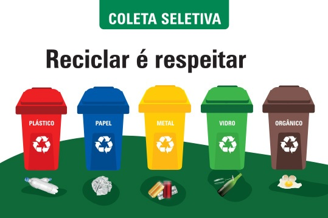

Nossas redes sociais:

LOGO
Sobre o Só Canela Reciclagens

Francisco
O maior caneleiro que temos ele é o fundador do projeto Só Canela Reciclagens, é com muito orgulho que dizemos a ele nosso lider amado parabéns pela iniciativa, parabéns por só canela kkkkkkkkkkkkk
Gustavo Coelho
Eu sempre fui um rapazinho meio tímido mas com o só canela isso é passado, agora eu tenho orgulho em fazer parte da comunidade, é muito satisfatório poder ajudar a comunidade

Jean Paulo
Ele é o cabeça do projeto, toma a iniativa vamos contudo Só Canela!
Riann sei la o que
Eu era um caminhoneiro todo solitário mas agora sinto que estou no lugar onde devia estar, todos juntos com o só canela
Raony
Eu era um garoto normal mas após ser exposto a um gás toxico eu me tornei o Super Choque!